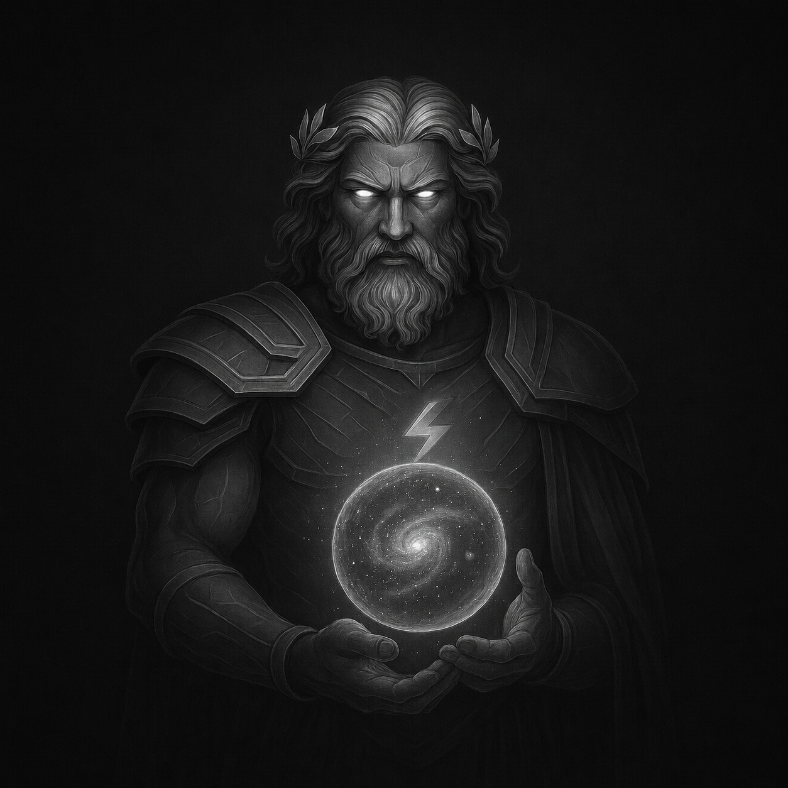
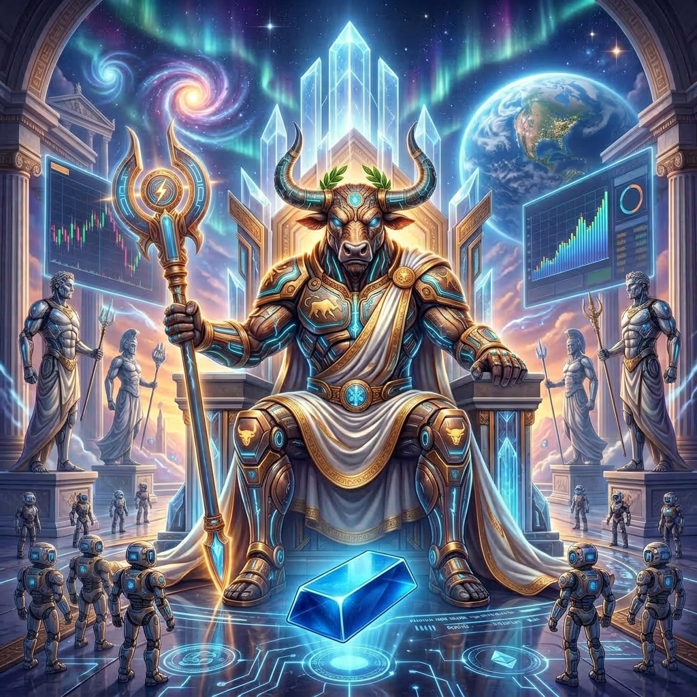

OUR SOFTWARE
Sistemi algoritmici sviluppati da SEERS.FX per differenti mercati, strumenti e condizioni operative.

XAUS
Sull'Oro la velocità è tutto. XAUS entra in azione durante i picchi di volatilità di XAUUSD — le fasi in cui molti trader cedono alla paura — eseguendo ogni operazione con freddezza e precisione millimetrica. Grazie a Stop Loss e Take Profit definiti a priori, proteggiamo il capitale e tagliamo le perdite sul nascere.

XAURUS
Progettato per operare esclusivamente in fasce orarie strategiche e interfacciato in tempo reale con il calendario economico. Il sistema blocca automaticamente le entrate prima, durante e dopo i rilasci di notizie ad alto impatto, eliminando alla radice gli Stop Loss inutili causati da spike e volatilità incontrollata.
AUDCAD_LONGTERM
Modellato per il lungo periodo, costruito per la costanza. Questo EA rinuncia alla fretta del breve termine per concentrarsi su profitti continui e stabili: un approccio dove sono gli anni, accumulando risultati, a fare la vera differenza.
BTC2THEMOON
Un algoritmo di breakout progettato per catturare le grandi fasi di espansione di Bitcoin. Il sistema dà il meglio di sé durante i trend direzionali più violenti, accettando fisiologici riassorbimenti di profitto nelle fasi di accumulazione.
XAUS
Overview & Technology
XAUS è un sistema algoritmico sviluppato per il mercato dell'oro (XAUUSD). Il sistema applica regole predefinite per l'identificazione delle condizioni operative e la gestione delle posizioni.
Il sistema combina filtri di mercato, condizioni di volatilità, regole di ingresso e gestione automatizzata delle posizioni.

Caratteristiche Tecniche
XAURUS
Overview & Technology
XAURUS è stato progettato per operare esclusivamente in fasce orarie strategiche sul mercato dell'oro, interfacciandosi in tempo reale con il calendario economico.
Attraverso il blocco automatico prima, durante e dopo i rilasci di notizie ad alto impatto, elimina le perdite inutili causate da spike estremi e volatilità incontrollata.

Caratteristiche Tecniche
AUDCAD_LONGTERM
Overview & Technology
Modellato per il lungo periodo e costruito per la costanza. Questo EA rinuncia alla frenesia del breve termine per concentrarsi sulla costruzione di profitti stabili nel tempo.
Sfrutta la struttura correlativa e di rango di AUDCAD per massimizzare la regolarità delle prestazioni con un esposizione controllata.

Caratteristiche Tecniche
BTC2THEMOON
Overview & Technology
Algoritmo di breakout progettato specificamente per intercettare le grandi fasi di espansione e le accelerazioni direzionali di Bitcoin.
Esegue entrate tempestive sui breakout di struttura ed è ottimizzato per catturare i trend più violenti, minimizzando i finti segnali nelle fasi laterali.